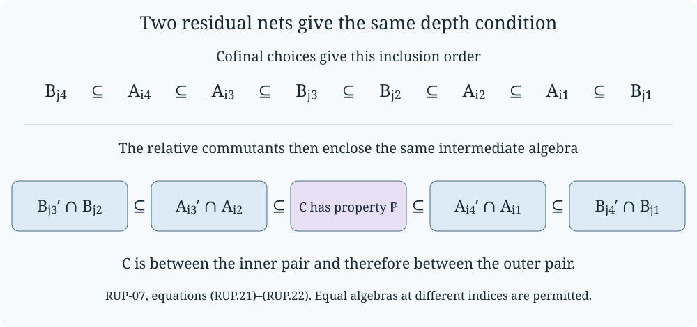

Residual tails and tracial ultraproducts
A tail algebra can both commute with a prescribed separable family and contain the commutant of another separable family. These two directions make tail algebras useful coordinates for invariants defined by successive relative commutants. We prove the uniform estimates, the passage to tracial ultraproducts, and the independence of the resulting depth condition from the chosen coordinates.
All algebras here have faithful normal tracial states, and all subalgebras share the ambient identity. A separable von Neumann algebra means one with separable predual. Fix a countable group \(\Gamma\) and \(\varepsilon\in\{0,1\}\). We use the groups \(T_\varepsilon(\Gamma)\), their tails \(C_n=\bigoplus_{j\geq n}\Gamma_j\), and their finite-support groups \(K_m\) from Residual subgroups and uniform group-factor estimates. Put
\[ \begin{gathered} M=L(T_\varepsilon(\Gamma)),\qquad P_n=L(C_n),\\ P_{n,m}=L\!\left(\bigoplus_{n\leq j<m}\Gamma_j\right)\quad(n<m). \end{gathered} \tag{RUP.1} \]The programme inputs are The trace core and its entire modular domain through Bimodule order, uniqueness and the exact Hilbert projection, for bounded trace multiplication and normal trace-preserving expectations; The image of a faithful normal representation, for closed images of faithful normal representations; A unitary subgroup and the trace projection, for the expectation in a closed convex unitary orbit; Central-sequence foundations, NT2 and FG1, for bounded trace topology, separability and group-algebra density; and Ultraproducts and the asymptotic centralizer, Lemma 1.4, Proposition 2.1, Lemma 2.2 and Theorem 3.2, for the finite tracial ultraproduct construction. The arguments below develop the residual-net and residual-pair mechanism in Boutonnet, Chifan and Ioana, II₁ factors with non-isomorphic ultrapowers, Sections 2.2–3.1 and Lemmas 3.13–3.14. They do not yet prove the nonisomorphism of the binary-sequence factors.
Tracial products, coefficients and separability
For finite tracial algebras \(A,Q\), represent them by left multiplication on \(L^2(A)\) and \(L^2(Q)\), as constructed in TA-01–02. On \(H=L^2(A)\otimes L^2(Q)\), let \(A\bar\otimes Q\) be the von Neumann algebra generated by the elementary tensor operators. The product identity vector \(\Omega=1\otimes1\) gives a normal state. It is faithful: right multiplication in each factor commutes with the generated algebra, and the vectors obtained by those right multiplications from \(\Omega\) have dense span. If \(x\Omega=0\), commutation makes \(x\) vanish on that dense span, so \(x=0\).
The vector state is tracial. On elementary tensors its value is the product of the two traces, and their algebraic span is ultraweakly dense. For a fixed algebraic tensor, both multiplication functionals of a second variable are normal and agree on that span, hence everywhere. Fixing the second variable now gives the same conclusion for an arbitrary first variable. This proves traciality on the full algebra. The cyclic vector is cyclic because the algebraic tensor products of the two dense trace-vector spaces are dense in \(H\). Consequently
\[ L^2(A\bar\otimes Q)=L^2(A)\otimes L^2(Q). \tag{RUP.2} \]The identifications use the specified product trace and identity vectors.
In particular, if \(A=L(G)\) for a countable group \(G\), a vector in this Hilbert space is a family \(\xi=(\xi_g)_{g\in G}\in\ell^2(G;L^2(Q))\). For a subgroup \(\Lambda\leq G\), TA-03–04 provide the normal expectation onto \(L(\Lambda)\bar\otimes Q\), and its Hilbert projection is exactly
\[ (\xi_g)_{g\in G}\longmapsto(1_\Lambda(g)\xi_g)_{g\in G}. \tag{RUP.3} \]Indeed finite sums of vectors \(\delta_h\otimes q\), \(h\in\Lambda\), \(q\in Q\), are dense in the trace Hilbert space of that subalgebra. Their closed span is precisely the displayed coordinate subspace. Conjugation by \(\lambda_a\otimes1\) permutes the coordinates by \(g\mapsto aga^{-1}\). Thus the Hilbert-valued estimate RSG-06 gives
\[ \|x-E_{L(\Lambda)\bar\otimes Q}(x)\|_2^2 \leq100\sum_{v\in\{a,b\}} \|[\lambda_v\otimes1,x]\|_2^2 \tag{RUP.4} \]whenever \(a,b\) witness strong residuality. No separability of \(Q\) is required.
We will also use two elementary consequences of the stated separability inputs. First, a separable finite tracial algebra has a unit ball separable for the tracial 2-norm: NT2 proves that its faithful-state GNS Hilbert space is separable, and the unit ball is a metric subspace of that Hilbert space. A subspace of a separable metric space is separable, by restricting a countable base and choosing a point from each nonempty basic set.
Second, a finite tracial algebra generated by countably many elements has separable predual. The rational complex star-polynomials in those elements form a countable set. Their trace vectors span a dense subspace: bounded strong density of the generated norm-closed algebra, followed by polynomial approximation, approximates every vector \(x1\). The faithful normal trace representation therefore acts on a separable Hilbert space. The predual argument in FG1 applies to any such representation: finite tensors from countable dense vector sets are dense in the projective tensor space representing normal functionals, and its quotient is separable. This proves the assertion. In particular the von Neumann algebra generated by two separable subalgebras is separable: take countable trace-dense unit-ball subsets in each; NT2's bounded topology comparison shows that they generate the two original algebras, and their union is countable.
Coordinate operations in a tracial ultraproduct
Fix a free ultrafilter \(\omega\) on \(\mathbb N\). Its existence follows from the maximal principle applied to the filters containing the cofinite filter: the union of a chain is a proper filter, and a maximal such filter decides every subset, since otherwise adjoining that subset still generates a proper filter. It contains no finite set, because the complement of every finite set already belongs to it.
Every bounded real sequence \((c_s)\) has an ultralimit. To see this directly, take
\[ \ell=\sup\{r\in\mathbb R:\{s:c_s>r\}\in\omega\}. \tag{RUP.5} \]The set is nonempty and bounded above. For each \(\eta>0\), some member exceeds \(\ell-\eta\), while \(\ell+\eta\) is not a member. The filter and decision properties therefore give \(\{s:|c_s-\ell|\leq\eta\}\in\omega\). Uniqueness follows from disjoint small intervals about two different candidates. Apply this to real and imaginary parts for complex sequences. Intersecting the sets on which two sequences are close to their limits proves additivity and multiplicativity by the ordinary scalar estimates; positivity follows in the same way. Since every cofinite set belongs to \(\omega\), \(\lim_\omega s^{-1}=0\).
For finite tracial algebras \((B_s,\tau_s)\), write
\[ \begin{gathered} \mathcal B=\prod_\omega B_s =\ell^\infty(B_s)\big/\{(x_s):\lim_\omega\|x_s\|_2=0\},\\ \tau_\omega((x_s)_\omega)=\lim_\omega\tau_s(x_s). \end{gathered} \tag{RUP.6} \]Theorem 3.2 of the programme lesson specified in the introduction proves that this is a von Neumann algebra with faithful normal tracial state. Its proof uses the two-sided trace multiplication bounds to obtain the closed ideal, modifies representatives of a rapidly Cauchy sequence on sets outside the ultrafilter to get coordinatewise summable differences, and applies the proved trace-metric completeness criterion. Thus we use the actual von Neumann quotient and its trace, not just a formal quotient of sequences.
If \(A_s\subseteq B_s\), the coordinate inclusion induces a trace-preserving injective star homomorphism \(\prod_\omega A_s\to\mathcal B\): its kernel is exactly the same trace-null ideal restricted to the smaller product. This map is normal. More generally, if \(\pi:A\to B\) preserves faithful normal tracial states and \(x_i\uparrow x\) is bounded and positive, then \(\pi(x_i)\uparrow y\leq\pi(x)\), and
\[ 0\leq\tau_B(\pi(x)-y) \leq\tau_A(x-x_i)\longrightarrow0. \tag{RUP.7} \]Faithfulness gives \(y=\pi(x)\). The closed-image theorem WH-02 makes its range a von Neumann subalgebra. We identify these ultraproduct subalgebras with their images.
Coordinate expectations induce an expectation as well. If \(E_s:B_s\to A_s\) are the trace-preserving expectations, their operator-norm and tracial 2-norm contractions show that
\[ E((x_s)_\omega)=(E_s(x_s))_\omega \tag{RUP.8} \]is well defined, contractive, unital, positive, bimodular, fixes the smaller ultraproduct, and preserves the trace. It is normal: for \(x_i\uparrow x\), positivity gives \(E(x_i)\uparrow y\leq E(x)\), and the same trace estimate as (RUP.7) forces equality. Its Hilbert action is the orthogonal projection, since the coordinate identities \(\tau_s(a_s^*E_s(x_s))=\tau_s(a_s^*x_s)\) pass to ultralimits for bounded representatives. Equivalently apply the uniqueness and Hilbert-projection conclusions of TA-04.
Uniform relative commutants
Lemma. For a unital von Neumann subalgebra \(A\subseteq B\), let \(N=A'\cap B\). Then
\[ \|x-E_N(x)\|_2 \leq\sup_{u\in\mathcal U(A)}\|[x,u]\|_2 \qquad(x\in B). \tag{RUP.9} \]Proof. The supremum \(r\) is finite, bounded by \(2\|x\|_2\). The tracial 2-norm ball of radius \(r\) about \(x\) is convex and ultraweakly closed. For the latter assertion use the ultraweak lower semicontinuity of \(y\mapsto\tau(y^*y)\) proved in EL-02, translated by \(x\). It contains every \(uxu^*\), since their distances from \(x\) are the commutator norms. EL-02 places \(E_N(x)\) in the ultraweakly closed convex hull of this orbit, proving the inequality. The commutant of the unitary group of \(A\) is the commutant of \(A\): for a self-adjoint contraction \(h\), the element \(h+i(1-h^2)^{1/2}\) is unitary with real part \(h\), and real and imaginary parts span \(A\). \(\square\)
Theorem. For arbitrary unital subalgebras \(A_s\subseteq B_s\),
\[ \left(\prod_\omega A_s\right)'\cap\prod_\omega B_s =\prod_\omega(A_s'\cap B_s). \tag{RUP.10} \]Proof. Elements represented in the coordinate commutants commute with every bounded coordinate sequence from the \(A_s\), giving one inclusion. For the other, let \(x=(x_s)_\omega\) belong to the left side, with a uniformly bounded representative. Set \(d_s=\|x_s-E_{A_s'\cap B_s}(x_s)\|_2\). If \(d_s>0\), (RUP.9) supplies \(u_s\in\mathcal U(A_s)\) with \(\|[x_s,u_s]\|_2>d_s/2\). If \(d_s=0\), take \(u_s=1\). The bounded unitary sequence defines \(u\in\prod_\omega A_s\). Since \([x,u]=0\), we have \(\lim_\omega d_s=0\). The expectations are operator-norm contractions, so \((E_{A_s'\cap B_s}(x_s))\) is a bounded representative of the same element \(x\), now in the coordinate commutants. \(\square\)
The algebra tested in (RUP.10) is the entire ultraproduct of the \(A_s\). It cannot be replaced by the constant copy of a fixed algebra: the latter permits nontrivial central sequences. The detecting unitaries in the proof depend on the coordinate and on the representative being tested.
Two unitaries force an ultraproduct into a tail
Let \(t_s,n_s\geq1\) be arbitrary integers, and let \(Q_s\) be arbitrary finite tracial algebras. Define
\[ \mathcal N=\prod_\omega M^{\bar\otimes t_s},\qquad \mathcal B=\prod_\omega(M^{\bar\otimes t_s}\bar\otimes Q_s). \tag{RUP.11} \]Use the inclusions \(x\mapsto x\otimes1\) and RUP-02 to view \(\mathcal N\subseteq\mathcal B\).
Proposition. There is a separable subalgebra \(D\subseteq\mathcal N\), generated by two unitaries, such that
\[ D'\cap\mathcal B \subseteq\prod_\omega(P_{n_s}^{\bar\otimes t_s}\bar\otimes Q_s). \tag{RUP.12} \]Proof. In coordinate \(s\), take the group unitaries associated with \(a_s=(t_1,\ldots,t_1)\) and \(b_s=(t_{n_s+1},\ldots,t_{n_s+1})\) in \(T_\varepsilon(\Gamma)^{t_s}\). RSG-07 gives these witnesses for the tail \(C_{n_s}^{t_s}\). Write their ultraproduct classes as \(u,v\in\mathcal N\) and put \(D=W^*(u,v)\). RUP-01 proves that \(D\) has separable predual.
If \(x=(x_s)_\omega\in D'\cap\mathcal B\), its commutators with both witnessing unitary sequences tend to zero in the tracial 2-norm along \(\omega\). Apply (RUP.4) in each coordinate. The constant \(100\) is independent of both \(n_s\) and \(t_s\), so
\[ \lim_\omega \|x_s-E_{P_{n_s}^{\bar\otimes t_s}\bar\otimes Q_s}(x_s)\|_2=0. \tag{RUP.13} \]The expected sequence is uniformly operator-norm bounded and belongs to the indicated tail algebras. It represents \(x\), proving (RUP.12). \(\square\)
A moving tail commutes with every separable family
Proposition. For every separable subalgebra \(S\subseteq\mathcal B\) in (RUP.11), there are integers \(n_s\geq1\) such that
\[ \prod_\omega P_{n_s}^{\bar\otimes t_s}\subseteq S'\cap\mathcal N. \tag{RUP.14} \]Proof. Choose a countable tracial 2-norm dense family \((x^{(j)})_{j\geq1}\) in the unit ball of \(S\), using RUP-01. Choose representatives \(x^{(j)}=(x^{(j)}_s)_\omega\) with \(\sup_s\|x^{(j)}_s\|\leq2\), possible by the quotient norm. For each coordinate \(s\), approximate the first \(s\) of these elements in the tracial 2-norm within \(1/s\) by finite sums of group unitaries in \(T_\varepsilon(\Gamma)^{t_s}\) tensored with elements of \(Q_s\). Such sums are dense by the Hilbert identification (RUP.2) and the group Fourier basis.
The finitely many group words in these approximants lie in \(K_{m_s}^{t_s}\) for some common \(m_s\); enlarge \(m_s\) if necessary. From the presentation and finite-support construction in RSG-02, \(K_{m_s}\) commutes with \(C_{m_s+1}\). Indeed disjoint base coordinates commute, permutations in \(S_{m_s}\) fix every later coordinate, and each attached \(t_j\), \(j\leq m_s\), commutes with every \(\Gamma_i\), \(i\geq m_s+1\). Thus each approximant commutes with \(P_{m_s+1}^{\bar\otimes t_s}\otimes1\).
Put \(n_s=m_s+1\), and take \(y=(y_s)_\omega\) in the tail ultraproduct, with \(\sup_s\|y_s\|\leq C\). For a fixed \(j\), all \(s\geq j\) satisfy
\[ \|[x^{(j)}_s,y_s\otimes1]\|_2\leq\frac{2C}{s}. \tag{RUP.15} \]Here the trace multiplication bounds are applied to the difference between \(x^{(j)}_s\) and its commuting approximant. No uniform operator bound on the approximants is required, since they are used only for this coordinate estimate and never as ultraproduct representatives. Freeness of \(\omega\) gives \([x^{(j)},y]=0\). Finally \(\|[x,y]\|_2\leq2\|y\|\|x\|_2\) extends commutation from the dense family to the whole unit ball of \(S\), and then to all of \(S\). \(\square\)
Residual nets, residual pairs and exact commutants
For a finite tracial algebra \(\mathcal M\), a decreasing family \((A_i)_{i\in I}\) of von Neumann subalgebras is a residual net if:
- Every separable \(Q\subseteq\mathcal M\) has some \(A_i\subseteq Q'\cap\mathcal M\).
- Every \(A_i\) contains \(Q'\cap\mathcal M\) for some separable \(Q\subseteq\mathcal M\).
For an inclusion \(\mathcal N\subseteq\mathcal B\), a residual pair is a decreasing family \(A_i\subseteq B_i\), with \(A_i\subseteq\mathcal N\), \(B_i\subseteq\mathcal B\), such that:
- For each \(i\), there is a separable \(Q\subseteq\mathcal N\) with \(Q'\cap\mathcal B\subseteq B_i\).
- For each separable \(S\subseteq\mathcal B\), there is \(i\) with \(A_i\subseteq S'\cap\mathcal N\).
We use directed index sets in which every finite set has a strict upper bound. A dummy increasing integer coordinate supplies this convention when needed. In particular repeating a subalgebra at a later index is permitted.
For (RUP.11), take \(I=\mathbb N_{\geq1}^{\mathbb N}\), with \(i<j\) meaning \(i_s<j_s\) in every coordinate, and include equality for the non-strict order. Coordinatewise maxima plus one give strict upper bounds. Set
\[ \begin{aligned} A_i&=\prod_\omega P_{i_s}^{\bar\otimes t_s},\\ B_i&=\prod_\omega(P_{i_s}^{\bar\otimes t_s}\bar\otimes Q_s). \end{aligned} \tag{RUP.16} \]RUP-04 proves the first residual-pair property and RUP-05 proves the second. These families are decreasing because their coordinate tails are decreasing. If \(Q_s=\mathbb C\) for every \(s\), the same argument proves that \((A_i)\) is a residual net of \(\mathcal N\).
Theorem. Suppose \(\Gamma\) is ICC, meaning that every nonidentity element has infinite conjugacy class. For \(i<j\),
\[ \begin{aligned} A_j'\cap B_i &=\prod_\omega(P_{i_s,j_s}^{\bar\otimes t_s}\bar\otimes Q_s),\\ B_j'\cap A_i &=\prod_\omega P_{i_s,j_s}^{\bar\otimes t_s}. \end{aligned} \tag{RUP.17} \]In particular the residual net with scalar \(Q_s\) satisfies \(A_j'\cap A_i=\prod_\omega P_{i_s,j_s}^{\bar\otimes t_s}\).
Proof. First work in one coordinate with \(n<m\) and a finite tensor exponent \(t\). The tail group splits as the direct product of the interval group \(\bigoplus_{n\leq k<m}\Gamma_k\) and \(C_m\); this splitting also holds in the \(t\)-fold products. Conjugation by the later tail leaves the interval coordinate fixed. Every nonidentity later-tail component has an infinite conjugacy class under that tail: choose a nonidentity coordinate and use ICC in that copy of \(\Gamma\).
For \(x\in P_n^{\bar\otimes t}\bar\otimes Q\), use its \(L^2(Q)\)-valued Fourier coefficients from RUP-01. If \(x\) commutes with all unitaries of the later tail, these coefficients are constant along its conjugacy orbits. A nonzero vector repeated on an infinite orbit contradicts square summability. Hence all coefficients with a nonidentity later-tail component vanish. Formula (RUP.3) then gives
\[ \begin{aligned} &(P_m^{\bar\otimes t}\otimes1)'\cap (P_n^{\bar\otimes t}\bar\otimes Q)\\ &\qquad=P_{n,m}^{\bar\otimes t}\bar\otimes Q. \end{aligned} \tag{RUP.18} \]Faithfulness of the product trace identifies equal trace vectors with equal operators. The reverse inclusion in (RUP.18) follows because interval and tail groups commute.
Apply RUP-03 to the inclusion of \(P_{j_s}^{\bar\otimes t_s}\otimes1\) in \(P_{i_s}^{\bar\otimes t_s}\bar\otimes Q_s\), coordinate by coordinate. Its uniform commutator argument proves the first line of (RUP.17). Apply it again with \(Q_s=\mathbb C\) to get the stated formula for \(A_j'\cap A_i\). Since \(A_j\subseteq B_j\), we have \(B_j'\cap A_i\subseteq A_j'\cap A_i\). Conversely every element of the interval ultraproduct commutes with all of \(B_j\): in each coordinate it commutes with both the later tail and the separate \(Q_s\) tensor factor. This proves the second line without assuming that any \(Q_s\) is a factor. \(\square\)
Depth does not depend on a residual net
There is always a residual net for a finite tracial algebra \(\mathcal M\): use \(Q'\cap\mathcal M\), where \(Q\) ranges over its separable subalgebras. For the strict-upper-bound convention, index by pairs \((Q,k)\), \(k\in\mathbb N\), ordered by inclusion in the first coordinate and the usual order in the second. The join of two separable subalgebras is separable by RUP-01, so this is directed and the integer coordinate supplies strict upper bounds. Both residual properties follow immediately from choosing the very subalgebra \(Q\) in their definitions. Call this the standard residual net.
Let \(\mathcal P\) be an isomorphism-invariant property of finite von Neumann algebras. Relative to a residual net \((A_i)\), say that \(\mathcal M\) has \(\mathcal P\) at depth one if
\[ \forall i_1\ \exists i_2>i_1\ \forall i_3>i_2\ \exists i_4>i_3 \tag{RUP.19} \]such that there is a von Neumann algebra with property \(\mathcal P\) intermediate in
\[ A_{i_3}'\cap A_{i_2}\ \subseteq\ A_{i_4}'\cap A_{i_1}. \tag{RUP.20} \]Intermediate includes either endpoint. The displayed inclusion follows from the decreasing order of the four tail algebras.
Theorem. This condition is independent of the residual net.
Proof. Let \((A_i)\) and \((B_j)\) be two residual nets. They are mutually cofinal in the direction of decreasing inclusion: given \(A_i\), the second residual condition supplies a separable \(Q\) with \(Q'\cap\mathcal M\subseteq A_i\), and the first condition for \((B_j)\) gives some \(B_j\subseteq Q'\cap\mathcal M\). Exchange the two nets for the reverse assertion. Any such index can be enlarged past finitely many previously chosen indices without losing its inclusion.
Suppose the depth-one condition holds for \((A_i)\). Given \(j_1\), choose \(i_1\) with \(A_{i_1}\subseteq B_{j_1}\), then choose the \(i_2>i_1\) provided by (RUP.19). Choose \(j_2>j_1\) with \(B_{j_2}\subseteq A_{i_2}\). For an arbitrary \(j_3>j_2\), choose \(i_3>i_2\) with \(A_{i_3}\subseteq B_{j_3}\). The hypothesis gives \(i_4>i_3\); choose \(j_4>j_3\) with \(B_{j_4}\subseteq A_{i_4}\). We obtain
\[ \begin{gathered} B_{j_4}\subseteq A_{i_4}\subseteq A_{i_3}\subseteq B_{j_3},\\ B_{j_3}\subseteq B_{j_2}\subseteq A_{i_2}\subseteq A_{i_1}\subseteq B_{j_1}. \end{gathered} \tag{RUP.21} \]Taking the appropriate relative commutants reverses the required inclusions and gives
\[ \begin{aligned} B_{j_3}'\cap B_{j_2} &\subseteq A_{i_3}'\cap A_{i_2}\\ &\subseteq A_{i_4}'\cap A_{i_1}\\ &\subseteq B_{j_4}'\cap B_{j_1}. \end{aligned} \tag{RUP.22} \]The intermediate algebra with property \(\mathcal P\) for the middle inclusion is also intermediate for the outer inclusion. This proves the condition for \((B_j)\). Symmetry finishes the proof. \(\square\)
Define \(\mathcal P^{(0)}=\mathcal P\) and let \(\mathcal P^{(k+1)}\) mean that \(\mathcal P^{(k)}\) holds at depth one. The theorem makes every stage independent of the chosen residual net. These are isomorphism invariants: a normal star isomorphism preserves subalgebras, separable preduals, relative commutants, inclusions and the intermediate-algebra condition; transport a residual net and then argue by induction on \(k\).

The eight positions in (RUP.21) are arranged in their inclusion order. The lower diagram is (RUP.22): any intermediate algebra for the middle pair also lies between the two outer endpoints. The construction permits equality of algebras at different indices.
Passing depth through an intermediate algebra
Theorem. Let \(\mathcal N\subseteq\mathcal M\subseteq\mathcal B\) be finite tracial von Neumann algebras, and let \((A_i\subseteq B_i)\) be a residual pair for \(\mathcal N\subseteq\mathcal B\). If \(\mathcal M\) has property \(\mathcal P\) at depth one, then for every \(i_1\) there is \(i_2>i_1\) such that for every \(i_3>i_2\) some \(i_4>i_3\) makes
\[ B_{i_3}'\cap A_{i_2}\ \subseteq\ A_{i_4}'\cap B_{i_1} \tag{RUP.23} \]contain an intermediate von Neumann algebra with property \(\mathcal P\).
Proof. Fix \(i_1\). The first residual-pair condition supplies a separable \(Q_1\subseteq\mathcal N\) with \(Q_1'\cap\mathcal B\subseteq B_{i_1}\). Use the standard residual net of \(\mathcal M\), allowed by RUP-07. The depth condition gives a separable \(Q_2\subseteq\mathcal M\) containing \(Q_1\), such that for every separable \(Q_3\supseteq Q_2\) in \(\mathcal M\), there is separable \(Q_4\supseteq Q_3\) for which
\[ \begin{gathered} (Q_3'\cap\mathcal M)'\cap(Q_2'\cap\mathcal M) \\\subseteq\\ (Q_4'\cap\mathcal M)'\cap(Q_1'\cap\mathcal M) \end{gathered} \tag{RUP.24} \]contains an intermediate algebra with \(\mathcal P\). The integer coordinate of the standard net allows the required strict index increases even when two \(Q\)'s coincide.
The second residual-pair condition, applied to \(Q_2\subseteq\mathcal B\), permits an \(i_2>i_1\) with \(A_{i_2}\subseteq Q_2'\cap\mathcal N\). For any \(i_3>i_2\), choose a separable \(Q\subseteq\mathcal N\) with \(Q'\cap\mathcal B\subseteq B_{i_3}\), using the first condition again. Put \(Q_3=W^*(Q,Q_2)\subseteq\mathcal M\); it is separable by RUP-01. Choose \(Q_4\) from (RUP.24). The second condition now supplies \(i_4>i_3\) with \(A_{i_4}\subseteq Q_4'\cap\mathcal N\).
All these choices give the two chains
\[ \begin{gathered} A_{i_4}\subseteq Q_4'\cap\mathcal M \subseteq Q_3'\cap\mathcal M\subseteq B_{i_3},\\ A_{i_2}\subseteq Q_2'\cap\mathcal M \subseteq Q_1'\cap\mathcal M\subseteq B_{i_1}. \end{gathered} \tag{RUP.25} \]An element of \(B_{i_3}'\cap A_{i_2}\) therefore belongs to the left endpoint of (RUP.24). An element of its right endpoint commutes with \(A_{i_4}\) and belongs to \(B_{i_1}\). Thus the intermediate algebra in (RUP.24) also lies between the endpoints of (RUP.23), proving the theorem. \(\square\)
Combining RUP-06 and RUP-08 supplies the precise tail-interval algebras through which a depth induction can pass. The next ingredient for separating the binary-sequence factors is a property whose presence and absence can be proved for the two initial group constructions.